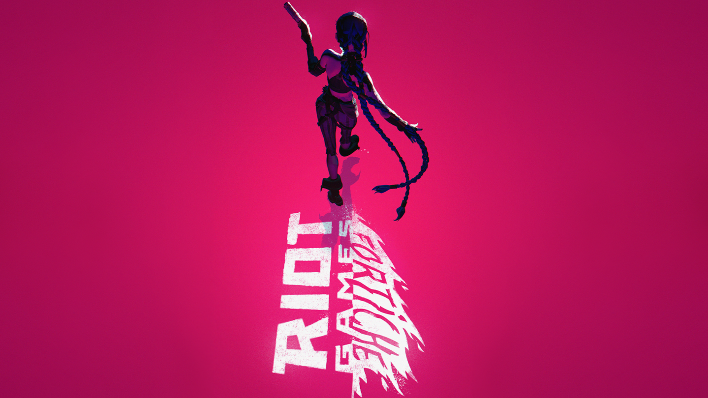

La serie de animación "Arcane" ha sido elogiada por su impresionante estilo visual y técnicas innovadoras. A continuación, exploramos las técnicas y procesos clave utilizados en su creación:
Estilo de Animación Único:

La animación de "Arcane" se destacó por su estilo único, que combinó 2D y 3D de manera innovadora. Fortiche, el estudio de animación francés detrás de la serie, desarrolló una técnica especial en la que primero esculpen y animan los personajes en 3D y luego realizan una rotoscopia sobre la animación 3D con animación 2D tradicional. Este método es raro y costoso, ya que combina los costos de una película animada en 3D con la animación 2D, utilizando la animación 3D como guía.